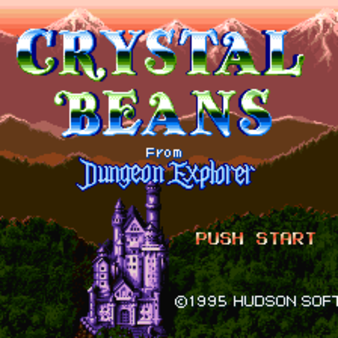

 Crystal Beans: From Dungeon Explorer
Details
| Playtime | Not Played |
| Last Activity | Never |
| Added | 21/02/2024 18:08:07 |
| Modified | 20/05/2024 22:32:56 |
| Completion Status | Not Played |
| Library | Playnite |
| Source | |
| Platform | Nintendo SNES |
| Release Date | 27/10/1995 |
| Community Score | |
| Critic Score | |
| User Score | 0 |
| Genre | Action RPG Dungeon crawler Hack and slash/Beat 'em up |
| Developer | Birthday |
| Publisher | Hudson Soft |
| Feature | Single Player |
| Links | |
| Tag | |
Description
Dungeon Explorer II is an action role-playing video game developed and originally published by Hudson Soft for the TurboDuo in Japan on March 26, 1993, and in North America by Turbo Technologies in October of the same year. A sequel to 1989's Dungeon Explorer, it is the second installment in the eponymous franchise.
Set a century after the fall of alien king Natas in the original Dungeon Explorer, players assume the role of one of the eight main characters tasked with recovering the Ora stone from the evil magician Fades, who stole it from king Earl II to resurrect Natas in order to save the land of Oddesia from destruction while also rescuing princess Miriam of Solis, who was taken as hostage by a monster. Though it was initially launched for the TurboDuo, Dungeon Explorer II was later re-released through download services for various consoles.
Dungeon Explorer II was met with mostly positive reception from critics and reviewers alike since its initial release on the TurboDuo, with praise directed towards the graphics, audio, gameplay and multiplayer.
Gameplay
Dungeon Explorer II is an action role-playing game with dungeon crawl and hack and slash elements that is played in a top-down perspective like its predecessor. Players assume the role of one of eight characters tasked with recovering the Ora stone from Fades, an evil magician who stole it from king Earl II to resurrect the deceased alien king Natas, in order to save the land of Oddesia from destruction. They must also rescue princess Miriam of Solis, who was taken as hostage by a monster. Like its predecessor, each character belongs to a specific class and their abilities vary primarily in their black and white magic as well as statistics. However, each character can be upgraded into new classes. Lives are shared between players and once all lives are lost, the game is over, though more can be obtained by playing a gambling minigame against the Grim Reaper. Like the first entry, the game supports five players simultaneously. A password system is also used.
Synopsis
Plot
Dungeon Explorer II takes place a century after the events occurred in the original Dungeon Explorer. After the death of alien king Natas, the Ora stone was in the hands of people from Oddesia once again, restoring peace across the land and preventing evil from entering the for many years until Fades, a faithful follower of Natas who resurrected him after killing king Earl II and stole the Ora stone from him, leading Oddesia into the path of destruction as a result. Around the same time, princess Miriam of Solis was captured and taken as hostage by a monster known as Mynos the Man-Bull while visiting Ardeen. A group of eight characters are tasked with retrieving the Ora stone to save the land of Oddesia, while rescuing Miriam from her captivity.
Characters
Dungeon Explorer II initially features eight playable characters at the start, while more playable characters can be unlocked by performing certain tasks during gameplay:
Development and release
Dungeon Explorer II was first previewed through video game magazines in 1992, while its release date was postponed several times before release. The soundtrack was composed by Yoshio Tsuru of Compozilla, although he is not named as such in the credits of the game. Turbo Technologies handled the English translation and localization, while American publisher Working Designs were responsible for the English voice acting.
Dungeon Explorer II was first published by Hudson Soft for the TurboDuo in Japan on March 26, 1993, and in North America by Turbo Technologies on October of the same year. On May 21, albums containing music tracks from the game were published exclusively in Japan by Hudson Soft. Due to its release towards the end of the add-on's lifecycle, the North American release has since become one of the more expensive titles on the platform, with copies of fetching over US$350 on the secondary video game collecting market. The title has received multiple re-releases in recent years on various digital distribution platforms such as the Virtual Console, PlayStation Network and Nintendo eShop.
Crystal Beans from Dungeon Explorer
A heavily modified version of Dungeon Explorer II titled Crystal Beans from Dungeon Explorer was developed for the Super Famicom and was released in Japan on October 27, 1995.
Reception
Dungeon Explorer II garnered mostly positive reception from critics since its initial release on the TurboDuo. Public reception was also positive; Readers of PC Engine Fan voted to give the game a 23.53 out of 30 score and ranking at the number 63 spot in a poll, indicating a large popular following.
GamePro criticized Dungeon Explorer's graphics for repetitive backgrounds and a "cartoony" style, and said the game's music is bizarrely out-of-place, likening it to polka party music and "Love's Theme" by The Love Unlimited Orchestra. They praised the voice acting and "menacing" sound effects, and said that though the enemies and bosses are both excessively easy to defeat, the length of the game is enough to satisfy RPG enthusiasts. In contrast to GamePro, DuoWorld said the music "fits the evil tone of the game well" and "is so good, it's hard to believe you're playing a video game." They also praised the five-player support and the gambling minigame, and while agreeing that the combat is not particularly difficult, argued that figuring out which characters must be talked to in order to progress the adventure is very challenging.
GameFan's four reviewers praised its audiovisual presentation, combination of action and strategy, addictive gameplay and five-player support. Joypad's Grégoire Hellot and Jean-François Morisse commended the graphics, character animations, sound design, controls and multiplayer but criticized its lack of originality. Mega Fun's Stefan Hellert and Martin Weidner felt that the visuals were similar to the first game but gave positive remarks to the atmospheric soundscape and multiplayer but criticized its light role-playing elements and repetitive gameplay. VideoGames' Nikos Constant liked its multiplayer component and gambling minigame but criticized its graphics, sound and gameplay.
In a retrospective review, Allgame said that Dungeon Explorer II "delivers a storyline of epic proportions wrapped around a very enjoyable action game." They particularly praised the range of possibilities and strategies for character development, particularly during multiplayer games.